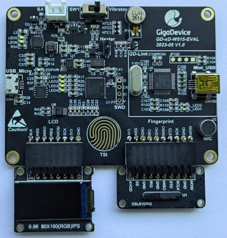

GD-xD-W515-EVAL
The GigaDevice GD-xD-W515-EVAL is an “all-in-one” evaluation kit for smart locks and portable HMI devices, built around the GD32W515PIQ6 (Cortex-M33, 2 MB flash, 448 KB SRAM). It is made of a main board, a fingerprint board and an LCD board.


The GD-xD-W515-EVAL with its LCD and fingerprint boards (photo: CNX Software).
Features
GD32W515PIQ6 MCU, 25 MHz crystal, no 32 kHz crystal
0.96” 160x80 IPS LCD (ST7735S, SPI) with PWM backlight
GSL6157 capacitive fingerprint sensor (SPI)
Capacitive touch key (TSI), vibration motor, four LEDs
GD25Q128E 16 MB QSPI NOR flash (U6)
GD30BC2416 battery charger, GD30LD1002 LDO, LiPo connector
On-board GD-Link (CMSIS-DAP) on the mini-USB connector
CH340E USB-serial bridge on the micro-USB connector
The integrated Wi-Fi radio cannot be used on this board: the vendor radio libraries only support 26 MHz and 40 MHz crystals.
Pin mapping
No schematic of this board is public. The pins below were read back from the GPIO setup of the factory firmware and checked on the hardware where noted.
Function |
Pins |
Notes |
|---|---|---|
Console |
PB10 (TX), PB11 (RX), AF7 |
USART2, to the CH340E |
LCD (SPI0) |
PA11 (SCK), PA9 (MOSI), AF0 |
Write only |
LCD control |
PA10 (D/C), PB13 (CS), PC6 (RESET) |
|
LCD backlight |
PB0 |
On with the display |
Motor |
PA0, TIMER1_CH0 (AF1) |
/dev/pwm0 channel 1 |
LEDs |
PB1, PC4, PC5, PC3 |
LED1..LED4, active high |
I2C0 |
PB15 (SCL, AF4), PA8 (SDA, AF5) |
GD30BC2416 charger |
Touch key |
PB12 (sampling), PB14 (channel) |
TSI, AF4, /dev/buttons |
Heater |
PC14 |
/dev/gpio0 (output) |
Fingerprint |
PC7 (SCK), PB6 (MISO), PB9 (MOSI) |
SPI1, AF5 (no driver yet) |
Fingerprint |
PB8 (CS), PB5 (SHUTDOWN) |
Outputs |
Fingerprint |
PA12 (IRQ) |
/dev/gpio2 (interrupt) |
USB detect |
PC1 (high with USB power) |
/dev/gpio1 (interrupt) |
Charger IRQ |
PB2 |
GD30BC2416 driver (*) |
Analog inputs |
PA1, PA2, PA3, PC2 |
ADC channels 1/2/3/6 (*) |
QSPI flash |
PA4 (SCK), PA5 (CS) |
GD25Q128E, AF3 |
QSPI flash |
PA6, PA7, PB3, PB4 |
IO0..IO3, AF3 |
(*) The analog inputs are configured by the factory firmware, but none of
them follows the battery voltage: the battery is only measured by the
charger. PB2 is /dev/gpio3 when the charger driver is disabled.
Fingerprint sensor
The GSL6157 sensor (160x36 pixels, Silead / GigaDevice) is on SPI1. Its
module is wired as the reference circuit of the GSL6157N2 datasheet, with
its I/O on the 1.8 V regulator of the sensor. There is no driver for it
yet: the board keeps the sensor deselected and out of reset, and its IRQ
output is /dev/gpio2.
Touch key
The “TSI” key is an electrode on PB14 (TSI group 2, pin 3), with the
sampling capacitor on PB12 (pin 1). The gd32w51x_tsi driver runs one
charge transfer sequence at a time; the board samples the key every 50 ms
on the work queue and exposes it as button 0 of /dev/buttons
(CONFIG_INPUT_BUTTONS_LOWER). The count is about 4470 cycles untouched
and drops under 1200 with a finger: the key is touched below 70 % of the
reference measured at boot (do not touch it then) and released above 85 %.
Battery charger
The GD30BC2416 charger is on I2C0. It has no register address byte: each
16-bit register answers on its own slave address (0x40 + register), so
i2ctool cannot read it. The gd30bc2416 driver registers it as
/dev/batt0 (battery_charger interface):
BATIOC_STATE,BATIOC_HEALTHandBATIOC_ONLINEfrom the status and fault registers.BATIOC_GET_VOLTAGE: the battery voltage, in mV, from the charger ADC.BATIOC_VOLTAGE: the charge voltage (4100, 4200, 4300, 4350 or 4400 mV).BATIOC_CURRENT: 100/75/50/25 % of the ISET current (unknown on this board, the 1.5 A maximum of the charger is assumed).BATIOC_OPERATE:BATIO_OPRTN_CHARGEandBATIO_OPRTN_BOOST.
The charger powers up with the charge disabled, and returns to its reset
configuration when the USB power is removed. The driver keeps the requested
charge voltage, charge current and enables, and writes them again on the
IRQ of the charger (PB2, pulsed on each event) and before each status read;
the IRQ also wakes up poll() on /dev/batt0. Enable
CONFIG_GD30BC2416_CHARGE to start the charge at boot. PC1
(/dev/gpio1) follows the USB power.
Warning
The charger is for a single Li-ion/LiPo cell. Do not connect a primary cell (Li-SOCl2, for instance) with the charge enabled.
TrustZone and flashing
The board ships with TrustZone enabled (TZEN option bit). NuttX runs in
secure state (see the GD32W51x chip documentation), which requires the flash
pages that hold the image to be marked secure. The factory setting only marks
the first 32 KB (FMC_SECMCFG0 = 0x00070000). Mark the whole flash once,
with OpenOCD and the GD-Link (this does not erase anything):
openocd -f target/openocd_gdlink_gd32w51x.cfg -c init -c "reset halt" \
-c "mww 0x50022004 0x45670123" -c "mww 0x50022004 0xCDEF89AB" \
-c "mww 0x50022024 0x45670123" -c "mww 0x50022024 0xCDEF89AB" \
-c "mww 0x50022008 0x45670123" -c "mww 0x50022008 0xCDEF89AB" \
-c "mww 0x50022048 0x01FF0000" -c "mmw 0x50022010 0x4200 0" \
-c "sleep 200" -c "mmw 0x50022010 0x8000 0" -c shutdown
The last write reloads the option bytes and resets the chip. Writing back
0x00070000 restores the factory setting.
The OpenOCD flash driver of the GigaDevice fork registers the flash at its secure alias when TrustZone is enabled, so program the image there:
openocd -f target/openocd_gdlink_gd32w51x.cfg -c init -c "reset halt" \
-c "program nuttx.bin 0x0c000000 verify" -c "reset run" -c shutdown
Note
With TrustZone enabled, the secure debug port reads the non-secure flash pages as zero. Back up the factory firmware only after all the pages are marked secure.
Serial console
The console is USART2 at 115200 8N1, on the micro-USB connector (CH340E).
Configurations
Each configuration is selected with:
$ ./tools/configure.sh gd-xd-w515-eval:<subdir>
nsh
Basic NuttShell configuration on the serial console:
nsh> uname -a
NuttX 13.1.0 b2dfe4f7e9 Oct 19 2026 08:22:30 arm gd-xd-w515-eval
nsh> free
total used free maxused maxfree nused nfree name
448344 6760 441584 7520 441192 22 2 Umem
ostest
ostest from apps/testing. It passes on the hardware:
nsh> ostest
...
user_main: Exiting
ostest_main: Exiting with status 0
periph
Board peripherals: /dev/userleds and the leds example, /dev/i2c0
and i2ctool, /dev/adc0 (adc example, software trigger),
/dev/pwm0 (vibration motor), the LCD as
/dev/fb0 (fb example, SPI with DMA), /dev/random, the
watchdogs (/dev/watchdog0 FWDGT, /dev/watchdog1 WWDGT, wdog
example), the RTC (date, kept across a reset), /dev/gpio0 and
/dev/gpio1//dev/gpio2 (gpio example), the battery charger
as /dev/batt0 and the touch key as /dev/buttons (buttons
example).
The IPS panel needs the color inversion and the BGR order of the ST7735S
(CONFIG_LCD_ST7735_INVCOLOR and CONFIG_LCD_ST7735_BGR), and a
26/1 pixel offset (CONFIG_LCD_ST7735_XOFFSET/YOFFSET) for its
80x160 window.
Light the four LEDs, then switch them off:
nsh> printf \x0000000f > /dev/userleds
nsh> printf \x00000000 > /dev/userleds
Run the vibration motor for 2 seconds:
nsh> pwm -f 200 -d 50 -t 2
pwm_main: starting output with frequency: 200 channel: 1 duty: 00007fff channel: 2 duty: 00007fff
pwm_main: stopping output
Read the analog inputs:
nsh> adc -n 1
adc_main: g_adcstate.count: 1
adc_main: Hardware initialized. Opening the ADC device: /dev/adc0
Sample:
1: channel: 1 value: 1842
Touch the “TSI” key while the buttons example runs:
nsh> buttons
button_daemon: Supported BUTTONs 0x01
Sample = 1
Sample = 0
littlefs
Two LittleFS volumes, formatted on the first boot and kept across a reboot:
/data: the last 128 KB of the internal flash (/dev/gd32flash)./flash: the 16 MB QSPI NOR flash (/dev/qspiflash, GD25 driver in QSPI mode).
nsh> mount
/data type littlefs
/flash type littlefs
/proc type procfs
nsh> echo hello > /flash/hello.txt
nsh> cat /flash/hello.txt
hello